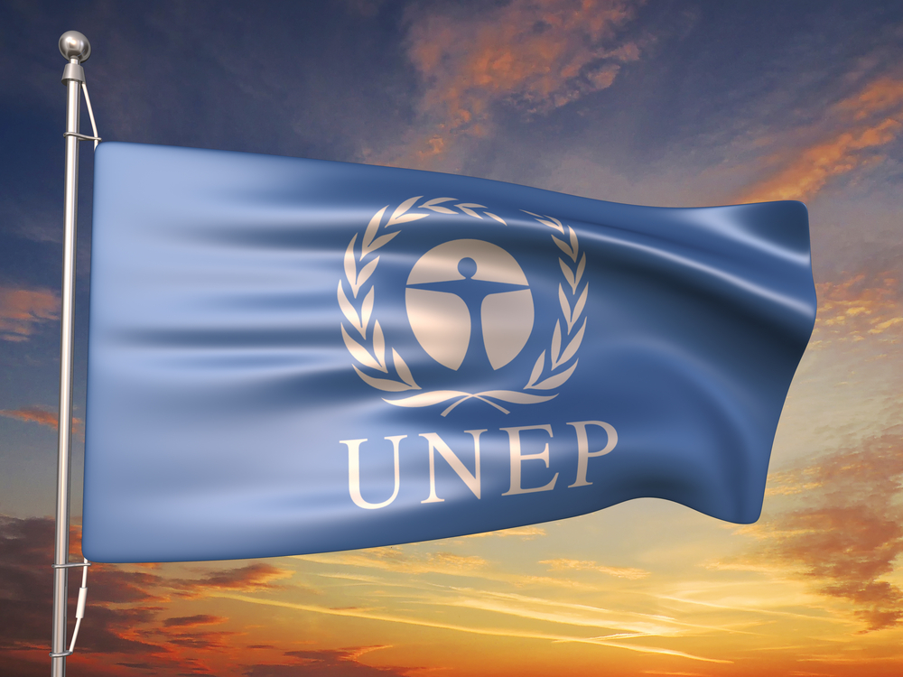
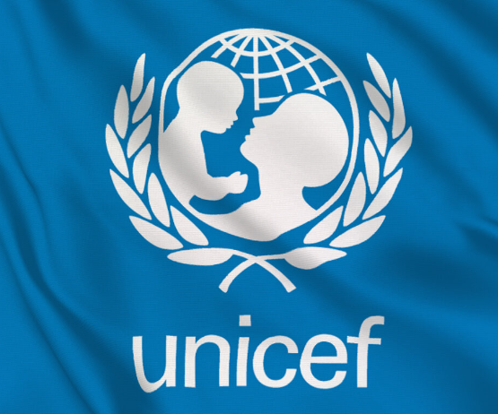
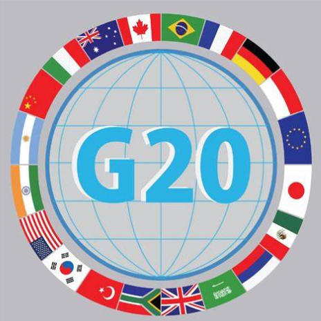
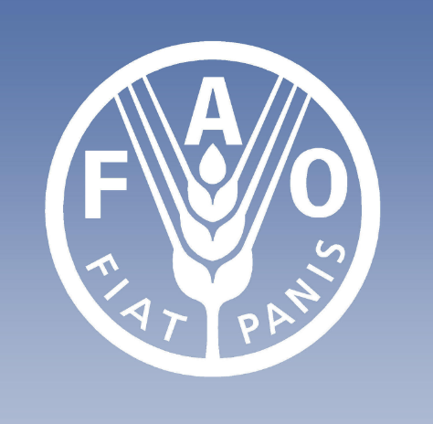

UNEP
The United Nations Environment Programme (UNEP) is a leading global environmental authority established in 1972. Its mission is to provide leadership and encourage partnerships in caring for the environment by inspiring, informing, and enabling nations and peoples to improve their quality of life without compromising that of future generations.
UNDP
The United Nations Development Programme (UNDP) is the global development network of the United Nations. It was established in 1965 and operates in approximately 170 countries and territories. The UNDP works to eradicate poverty, reduce inequalities, and build resilience so countries can sustain progress.

UNICEF
The United Nations Children's Fund (UNICEF) is a United Nations agency responsible for providing humanitarian and developmental aid to children worldwide. Established in 1946 to help children affected by World War II, it has since expanded its mandate to address the needs of children and mothers in developing countries.

G20
The Group of Twenty (G20) is an international forum for governments and central bank governors from 19 countries and the European Union. Established in 1999 in response to the financial crises of the late 1990s, the G20 aims to bring together major advanced and emerging economies to discuss and coordinate on international economic and financial policies.

FAO
The Food and Agriculture Organization of the United Nations (FAO) is a specialized agency established in 1945 with the goal of defeating hunger and improving nutrition and food security. The FAO is headquartered in Rome, Italy, and operates globally to raise levels of nutrition, improve agricultural productivity, better the lives of rural populations, and contribute to the growth of the world economy.
IP
The International Press was established in the year 1948 by the UN, and it has always strived to bring out the truth to the people. The Press acts as a link between the masses and the UN. It functions as an investigative, versatile and important form of communication between the world and human beings.